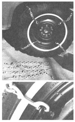

Since I find both the installation and removal of tire chains a pain, I devised a quickie set of grippers that I can install or remove in less than a minute as winter driving conditions change, and which are small enough to fit in an ammunitions box in my trunk or on the floorboard. However, I want to caution readers that, although traction is good with my homemade versions, they don't have all the gripping power of a regular set of snow chains and, therefore, don't have as much braking power. This should be considered if you expect to encounter steep grades. For normal terrain, however, my quickies will get you there and back reliably.
To make them, weld eight 3/8" single chain links-at equal distances from one another-on the inside and outside of a couple of spare tire rims ...after grinding away all the paint in the areas where the links are to be attached. Take care not to inhale the fumes while welding, because the cadmium plating of the galvanized chain is highly toxic. Then, when you're finished, chip the slag, and prime and paint the rims as you see fit.
Next, install a good set of snow tires, have them balanced, cut lengths of 1/4" chain, install snap links to connect them to the rims, and you're ready to face Old Man Winter's variable moods. To extend the life of your chains, drop the tire pressure a few pounds to reduce the slapping of the metal on pavement.
|
 |
|
|